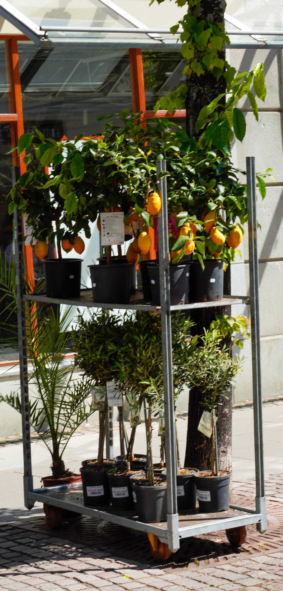
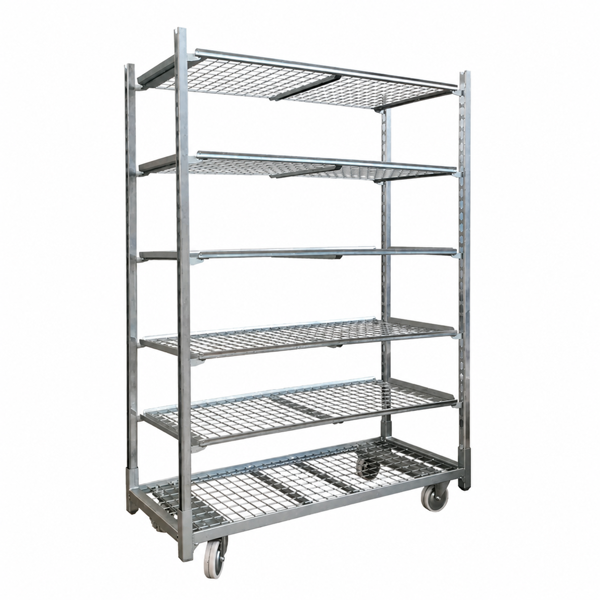
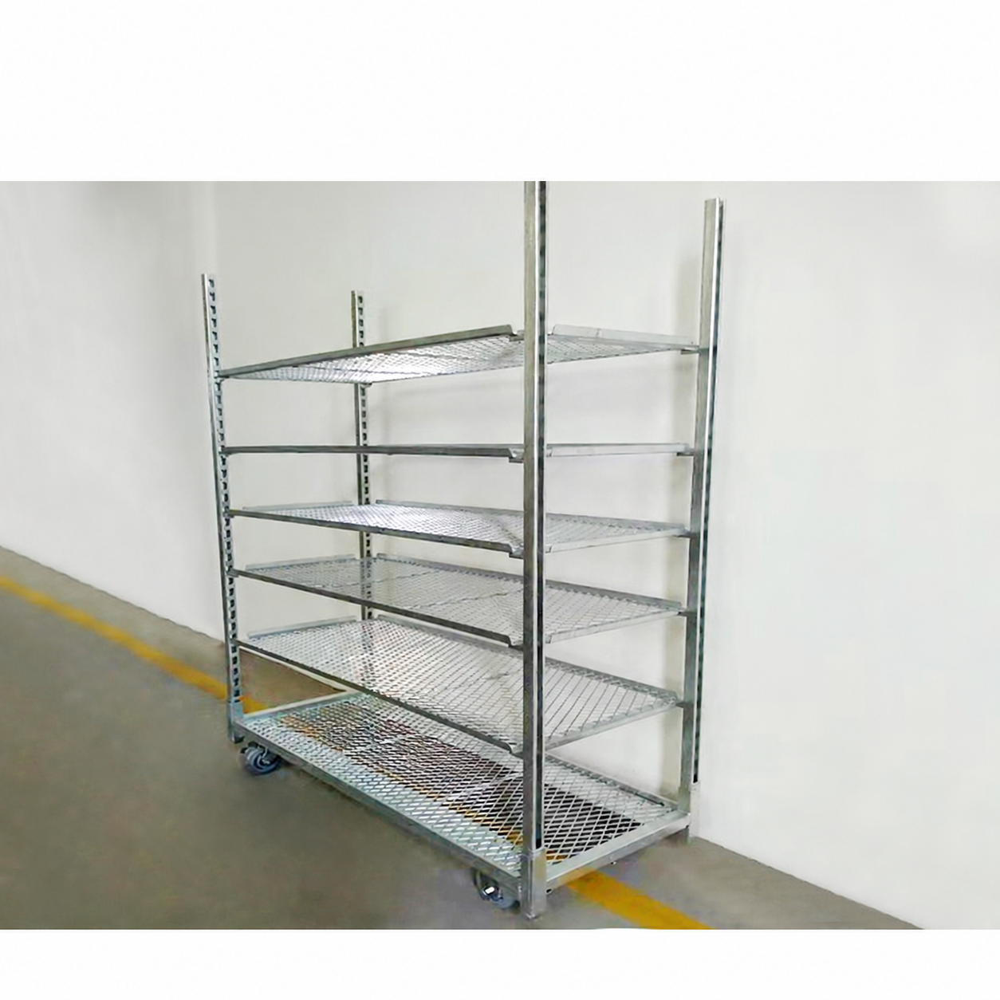

Within the nursery
Discuss rack height, aisle clearance and caster suitability for your floors.
STEEL FABRICATION · NURSERY EQUIPMENT
Custom nursery trolleys and plant racks, sourced from China to your drawings, detailed requirements or an agreed standard-size option.
Discuss your requirementsNo drawing yet? Share detailed requirements and we can prepare a drawing for your approval, or discuss our standard-size options.

01 / THE APPLICATION
From growing areas to dispatch, the right rack starts with the plants, the route and the people handling it.
Daris OEM is your export contact for custom steel fabrication in China. We coordinate requirements with manufacturing partners for nursery trolleys, multi-tier plant racks and related welded components.
Discuss rack height, aisle clearance and caster suitability for your floors.
Match shelf spacing to pots and trays, with handling and loading in mind.
Use agreed drawings and inspection requirements to define the product.
RACK CONFIGURATIONS
Discuss shelf spacing, mesh and overall proportions.
Final construction follows the approved drawing.

A reference for discussing shelf area, plant clearance and wheel layout.

A reference for discussing tier count, shelf construction and working height.
Product-style illustrations. Final dimensions and construction are defined by the approved drawing.
02 / CUSTOM SPECIFICATIONS
Standard-size options or custom dimensions.
Final specifications are agreed before production.
03 / HOT-DIP GALVANIZING
For fabricated steel used around watering and outdoor handling, define corrosion protection as part of the product specification.
Discuss your coating requirementsState the required coating thickness and whether it applies to a local minimum or an average. Suitability depends on the steel and the finished design.
Confirm which welded assemblies are galvanized after fabrication, along with drainage, venting and any areas needing special attention.
Agree the applicable standard, sampling method and documentation required in the quotation. These are project-specific requirements.
04 / FROM REQUIREMENTS TO QUOTATION
Share your drawing if you have one, or describe your requirements in detail. Include dimensions, plant or tray sizes, required loads, quantity and destination.
Choose a standard-size option, or share sufficiently detailed requirements and we can prepare a drawing for your review and approval before production.
Confirm the specification, sample arrangements, packing and delivery terms before an order.
LET’S START WITH YOUR REQUIREMENTS
Send your drawing, ask about standard-size options, or share detailed requirements so we can prepare a drawing for your review and approval.
info@daris-oem.comMark Lee · Yangzhou Daris OEM
Export contact, China